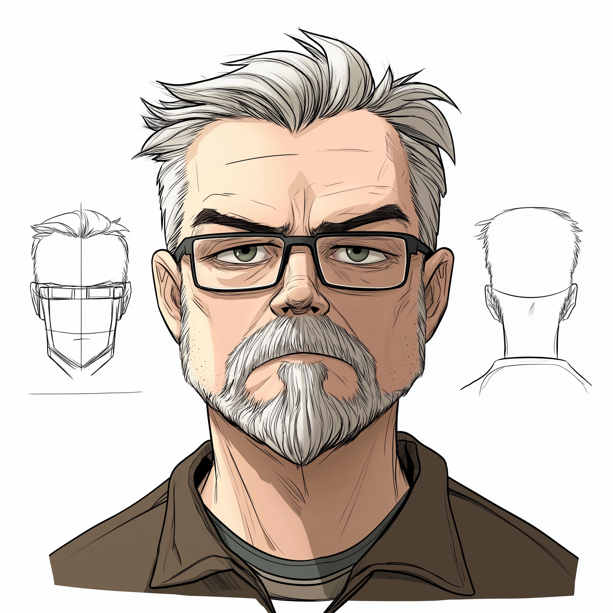

01
Broadcast
Kicked off in television as a graphic designer and animator — think flashy transitions and graphics that would make your dial-up modem sweat.
homelab status: all systems nominal
Cloud Architect · Home Lab Hobbyist · Recovering Broadcast Designer
Three decades of moving pictures across wires — from flashy TV transitions, through the great buffering years, to cloud infrastructure that keeps things running smoother than a cat meme on fiber internet.

The career, in three acts
Kicked off in television as a graphic designer and animator — think flashy transitions and graphics that would make your dial-up modem sweat.
The internet came knocking, and the call of the wild web won. Moved into IT and video streaming — back when buffering was basically a rite of passage.
Fully leveled up to cloud architect — designing cloud infrastructure that keeps things running smoother than a cat meme on fiber internet.
Say hello